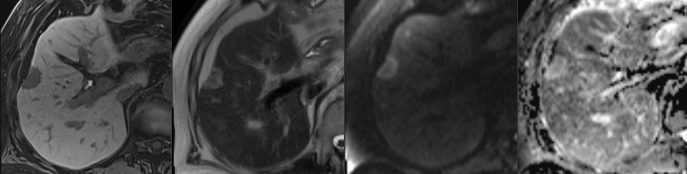
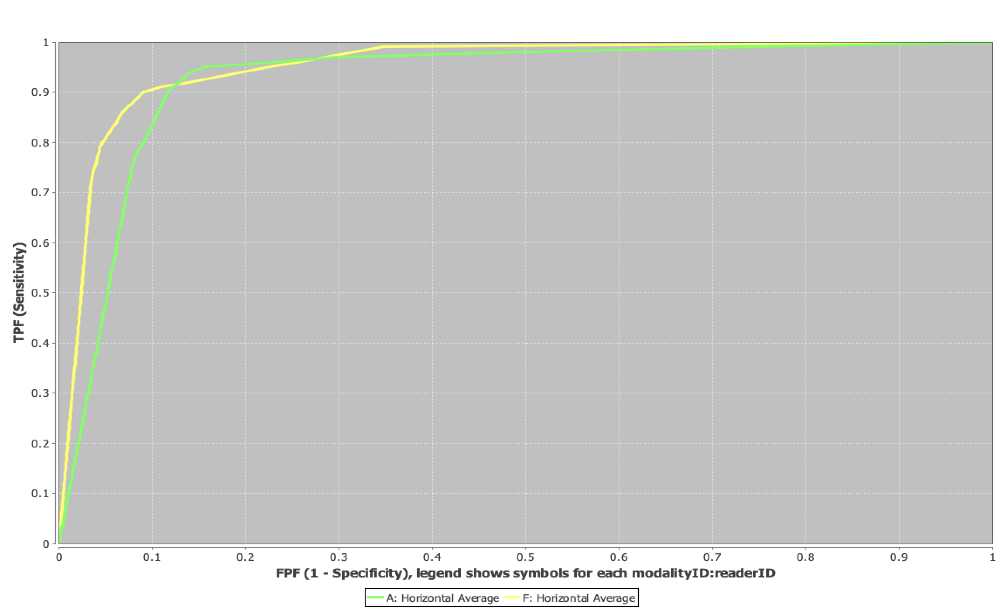

Abbreviated Liver MRI
Introduction
Colorectal cancer is one of the most common malignancies worldwide, and and the liver is both the first and most common site of solid organ metastasis. Therefore, accurate detection of liver metastases is critical for treatment planning and surgical decision-making.
While gadoxetate-enhanced MRI (Primovist/Eovist) offers excellent sensitivity, its lengthy protocol limits throughput and patient tolerance. This study explores whether an abbreviated MRI protocol can maintain diagnostic accuracy while significantly reducing scan time.
Study Overview
- Study type: Prospective, randomized controlled non-inferiority trial
- Design: Multi-reader, multi-case; balanced group assignment; allocation concealed; unblinded
- Population: 200 adult patients with colorectal cancer and known or suspected liver metastases
- Comparison: Abbreviated protocol (T2, DWI, and hepatobiliary phase) vs. full Primovist protocol
- Readers: Eight abdominal radiologists at two academic institutions
- Reference standard: Histopathology when available, otherwise imaging follow-up
- Follow-up: One year, used to establish the reference standard and track clinical outcomes
- Primary outcome: Per-lesion diagnostic accuracy for liver metastasis detection, measured by AUROC
- Secondary outcomes: Procedural and downstream costs; overall, cancer-specific, and progression-free survival; hepatic recurrence
This trial is registered at ClinicalTrials.gov (NCT05314400).
Preliminary Findings
Interim analysis was performed using three of the eight planned abdominal radiologist readers on 58 patients (35 with metastases, 23 without), including a total of 367 lesions. Of these, 220 lesions (113 metastatic, 107 benign) identified by all three readers were included in the lesion-level accuracy analysis.
Per-lesion diagnostic performance was high for both protocols (Figure 1). Mean AUROC was 0.93 (range: 0.89–0.96) for the abbreviated protocol and 0.96 (range: 0.92–0.99) for the full protocol. The difference in mean AUROC between protocols was below the pre-specified non-inferiority margin (δ = 0.05), consistent with non-inferiority. Patient-level AUROC results showed a similar trend, with mean AUCs of 0.88 (abbreviated) and 0.91 (full).
Full statistical testing will be performed once all reader data are available.
Figure 1: ROC curves comparing abbreviated (green) and full (yellow) protocols for liver metastasis detection.
Implications
These preliminary results support the use of abbreviated Primovist MRI protocols as a time- and cost-efficient alternative to full protocols, without compromising lesion detection performance. If validated with the full dataset, this approach could could significantly improve liver MRI throughput — allowing more patients to be scanned in less time while maintaining diagnostic confidence.
Future directions include finalizing multi-reader data collection, expanding to external validation sites, and integrating AI-based lesion detection for even greater workflow efficiency.